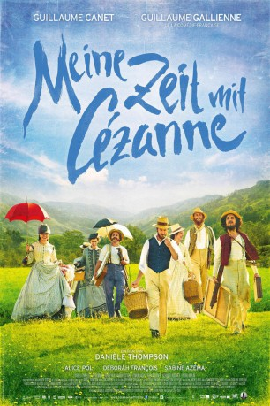

#5591 Meine Zeit mit Cézanne
 
 IMDB-Wertung: 5.9 / 10
IMDB-Wertung: 5.9 / 10  Metascore: 0
Metascore: 0 
Sie inspirierten sich, stritten sich und fanden sich doch immer wieder: Paul Cézanne, der geniale Maler und Émile Zola, der große Schriftsteller. Sie arbeiteten wie Besessene auf der Suche nach Perfektion und Anerkennung. Der eine hatte Geld, Ruhm und Frau, der andere nichts außer sich selbst. Es ist eine hochspannende Geschichte von Zuneigung und Eifersucht, von Mut und Verzweiflung sowie von unbändiger Schöpfungskraft, eingebettet in die intensiven Farben der Provence. Gedreht an Originalschauplätzen entfaltet „Meine Zeit Mit Cézanne“ in wundervollen Bildern den visuellen Kosmos der Impressionisten und zeichnet so das Porträt einer ganzen Epoche.
Jahr: 2016
Dauer: 114 Minuten
FSK:
Land: Frankreich Studio: Prokino FilmverleihTonspuren:
Untertitel: Deutsch,
Auflösung: 1080p (1920x800) Größe: 4884 MB
Genre: Drama, Biographie
Regisseur: Danièle Thompson
Drehbuch: Ulrich Seidl
Soundtrack:
Darsteller:
 Guillaume Canet als Emile Zola
Guillaume Canet als Emile Zola Guillaume Gallienne als Paul Cézanne
Guillaume Gallienne als Paul Cézanne Alice Pol als Alexandrine Zola
Alice Pol als Alexandrine Zola- Déborah François als Hortense Cézanne
- Sabine Azéma als Elisabeth Cézanne
 Freya Mavor als Jeanne
Freya Mavor als Jeanne- Alexia Giordano als Marguerite
- Patrice Tepasso als Frédéric Bazille
- Pierre Yvon als Batistin Baille
- Gérard Meylan als Louis-Auguste C��zanne
 Laurent Stocker als Ambroise Vollard
Laurent Stocker als Ambroise Vollard- Isabelle Candelier als Emilie Zola
- Félicien Juttner als Guy de Maupassant
- Flore Babled als Angèle Baille
- Romain Cottard als Camille Pissarro
- Alexandre Kouchner als Auguste Renoir
- Romain Lancry als Anchille Emperaire
- Nicolas Gob als Edouard Manet
- Pablo Cisneros als Francesco Oller
- Christian Hecq als Père Tanguy
- Sophie de Fürst als Berthe
- Emilie Alfieri als Servante Cézanne
- Agathe Goussard als Marie, la soeur de Paul
- Nicolas Messica als Paul, le fils de Cézanne
- Corinne Puget als La vendeuse
- Didier Constant als Le vendeur
- Virginie Colemyn als La servante galerie
- Luc Palun als Le maire
- Philippine Pierre-Brossolette als Femme bourgeoise 1
- Julie Villers als Femme bourgeoise 2
- Damien Zanoli als Mari bourgeoise
- Carole Labouze als Berthe Morisot
- Frank Cicurel als Un jeune homme au salon
- Hugo Fernandes als Paul Cézanne enfant
- Lucien Belvès als Emile Zola enfant
- Jérémy Nebot als Batistin enfant
Datei: X:\2016(G-M)\Meine Zeit mit Cézanne (2016, FSK, 1920x800).mkv seit 20.02.2017
Festplatte: HD 2016(A-Z)
 Es gibt insgesamt 164 Filme in der Gruppe '2016(G-M)'
Es gibt insgesamt 164 Filme in der Gruppe '2016(G-M)'